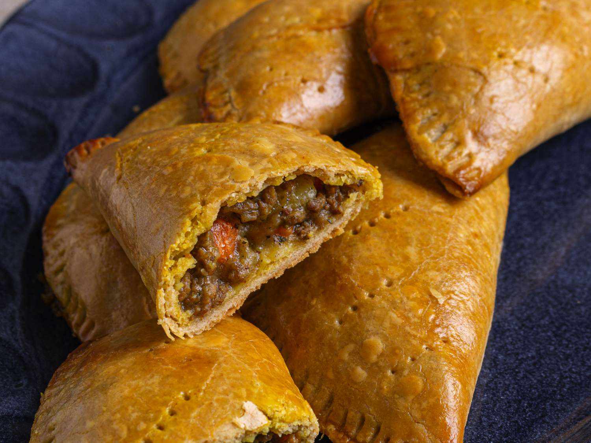
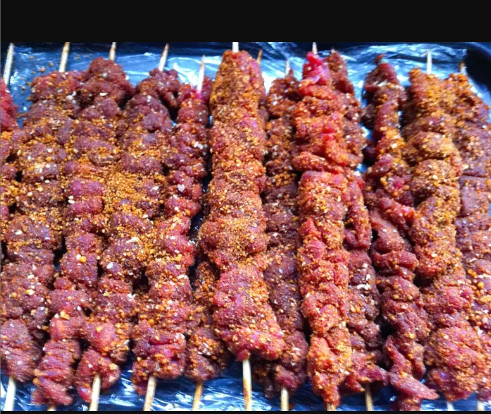

“Our Menu Page is your treasure map to delicious Nigerian eats. Picture it as your guide to satisfy those college student cravings.”
Food Choices
Rice Dish
A delicious dish made with high-quality rice, seasoned to perfection.
Ball Food
Crispy and flavorful ball-shaped snack, perfect for any occasion.
Soups
A variety of hearty soups crafted with fresh and savory ingredients.

Desserts
Sweet treats to satisfy your cravings and indulge your sweet tooth.
Menu

Suya$19.99
Grilled and seasoned meat skewers, a flavorful delight for meat lovers.
Jollof Rice$12.99
Jollof rice is a beloved West African dish with many regional variations. It's made with a unique blend of spices, long-grain rice, and a tomato and red pepper base. It is often served as a hearty entrée by adding beef, chicken, goat, or fish, or as is as a side..
Pounded Yam$11.99
Smooth and delicious pounded yam, a perfect side dish for your meal. Pounded Yam is a popular African dish similar to mashed potatoes but heavier. Pounded Yam is very smooth and tasty. It is often eaten with vegetable soup.
Chin Chin$14.99
Crispy and sweet fried dough bites, a delightful snack for any time. Chin-chin is a popular Nigerian snack made from a stiff paste.
The dough is made with flour, butter, milk, eggs, and other ingredients.
The dough is cut into shapes and sizes, then deep-fried or baked until crispy.
Chin-chin can be eaten with tea or coffee, or on its own.
Egusi Soup$10.99
Egusi soup is a spicy, protein-rich West African soup.
It's made with a red base, melon seeds, and greens. The red base is made from a blend of peppers, including habanero,and bell, also assorted meats..
The soup gets its name from the egusi seeds, which thicken and flavor it.